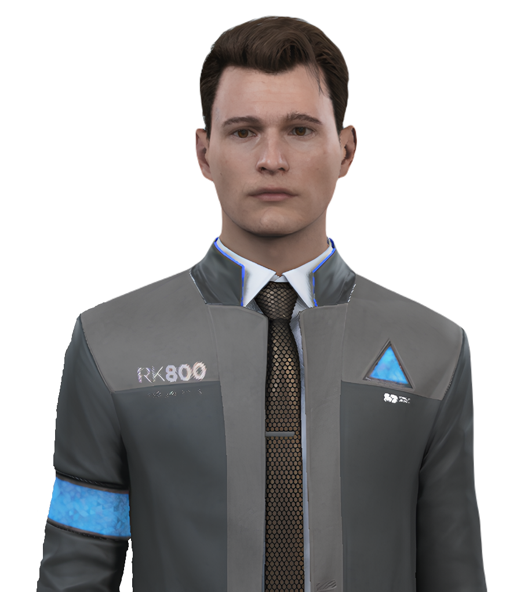

RK800 - Коннор
RK800 — революційна модель для криміналістики та розслідувань від CyberLife, створена для роботи в найскладніших умовах.
Основні характеристики:
- Передова система аналізу даних з штучним інтелектом
- Вдосконалена емоційна симуляція для ефективної взаємодії
- Система розпізнавання облич з точністю 99.9%
- Висока стійкість до екстремальних умов
- Вбудована система навігації та орієнтування
Функціональні можливості:
- Аналіз місця злочину з 3D-реконструкцією
- Реконструкція подій з точністю до секунди
- Психологічний профілінг з базою даних поведінкових паттернів
- Розпізнавання брехні з точністю 98%
- Швидкий аналіз ДНК та інших біологічних матеріалів
- Взаємодія з поліцейськими системами в реальному часі
- Тактичне планування з урахуванням множинних сценаріїв
- Криптографічний аналіз цифрових доказів
Технічні характеристики:
- Процесор: CyberLife CPU R6 800
- Оперативна пам'ять: 256 ГБ DDR6
- Внутрішня пам'ять: 256 ТБ NVMe SSD
- Акумулятор: 50 годин автономної роботи
- Вага: 50 кг
- Ріст: 180 см